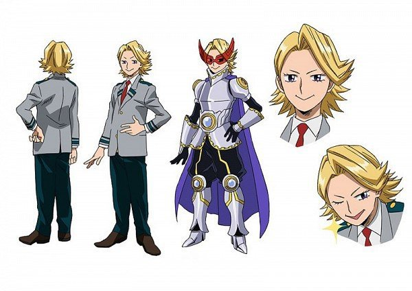

Юга Аояма
Юга Аояма
- Пол: ♂ Мужской
- Рост: 168 см.
- Возраст: 16
- Группа крови: O(|)
- Родился в: Японии
Юга Аояма, также известный, как Сияющий герой: Я не могу перестать блистать — студент академии Юэй, который тренируется, чтобы стать профессиональным героем.
В одиночку все трудности не преодолеть.В одиночку нельзя засиять! ☆
Внешность
Юга — молодой парень худощавого телосложения и весьма женственными чертами лица. У него светлые блондинистые волосы, длинные ресницы и глаза цвета индиго.

Его геройский костюм состоит из иссиня-черного костюма, поверх которого он носит блестящие серебряные доспехи с золотыми вставками на всех его элементах, мерцающий плащ цвета индиго и очки V-образной формы красного цвета. Помимо этого, его костюм включает в себя специальный пояс поддержки с большим синим кристаллом в золотом обрамлении, а также мини-копии этого приспособления на плечах и коленях.
Личность
Юга Аояма — самовлюблённый и горделивый человек, любящий быть в центре внимания, даже несмотря на то, что зачастую его все попросту игнорируют. Считает свою причуду самой яркой по сравнению с причудами своих одноклассников. Большую часть времени выражение его лица имеет лёгкую улыбку и она не пропадает даже в моменты страха. Парня легко обидеть, если перебивать его во время разговора или не обращать на него внимания. Он склонен выставлять на показ своё происхождение, внедряя в предложения французские фразочки.
На самом деле все вышеперечисленное — просто маска, скрывающая его истинные чувства. Юга не ставит себя выше остальных и прекрасно осознает, что его причуда совершенно не уживается с его организмом, но всё равно мечтает однажды стать "нормальным".
Юге не чуждо добросердечность и сострадание. Однажды, желая подбодрить одноклассника, он проявил несколько странную заботу об Изуку, так как считал проблему их причуд схожей, а во время экзамена на временную лицензию Юга был готов стать приманкой только лишь для того, чтобы дать возможность другому однокласснику Тенье сдать этот экзамен.
Юга старается не вступать в открытый бой с врагом, предпочитая спрятаться в ближайшем укрытие, но при этом он готов пожертвовать своей безопасностью ради спасения одноклассника.[
Причуда
 Лазер в пупке: причуда, позволяющая владельцу стрелять мощным сверкающим лазером прямо из своего пупка. Огромным минусом его причуды является невозможность её активации на время более одной секунды. Пренебрежение этим правилом приводит к сильной боли в животе, из-за чего Юге приходится носить специальный поддерживающий пояс на протяжении всей своей жизни.
Лазер в пупке: причуда, позволяющая владельцу стрелять мощным сверкающим лазером прямо из своего пупка. Огромным минусом его причуды является невозможность её активации на время более одной секунды. Пренебрежение этим правилом приводит к сильной боли в животе, из-за чего Юге приходится носить специальный поддерживающий пояс на протяжении всей своей жизни.